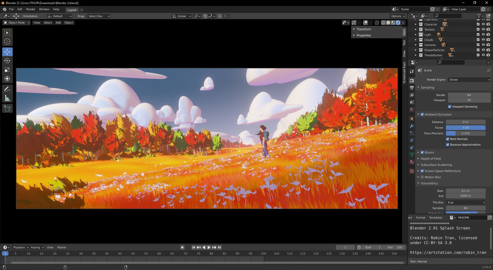
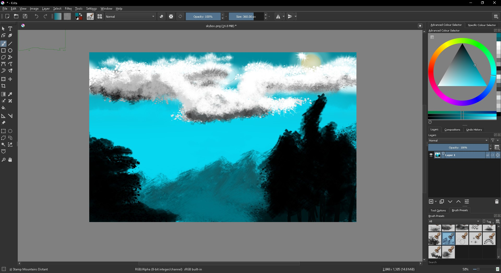
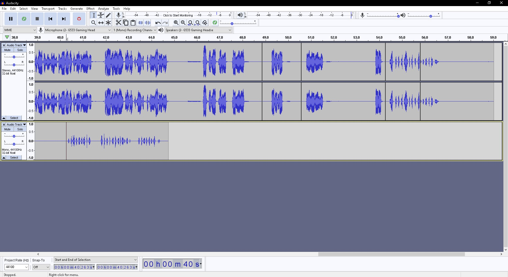

We are developers behind the award winning game "The totally existing game: Fictional"
Our story begins with four friends having an interest in games. but one night all of us weren't able to find something we wanted to play so one of us suggested that we should make our own game. beginning the journey we did not have any professional tools so we decided on only ever using open source software.
Together we made a game and we enjoyed the process of making a game so we decided to try to create an overwhelmingly complex game to give us a real challenge. We spent days and nights perfecting our skills to be able to complete the task.
Which turned into our award winning game which granted us the means to start a company so we spread our roles according to what they felt comfortable with during the project
Our graphic design is made possible due to the open source applications “blender 3D and Krita.
Blender is a 3D software that has been made by a dutch foundation. which has no interest in earning money in their product. We felt that this was a solid choice for a 3D model due to next to, if not a good competitor to the professional 3D workspaces.
With a community helping to build the blender by pushing updates and technologies. Lately Blender has seen a lot of changes with a lot of quality of life changes.
Krita is a good application for drawing Concept art and textures. it is also really suitable for the artistic style we choose for our games. There is a function that allows the images to repeat over the workspace which is really useful for making seamless textures.
Our sound was recorded using Audacity. We played around with different objects to emulate sounds and after some days we had recorded hours worth of sound effect we then remixed using the filter in Audacity.
We use Unity as our game engine because it is a workspace we started with and it has become a familiarity, and it also a great choice for our artstyle that we use. Unity uses C# so our game is based around the coding language.